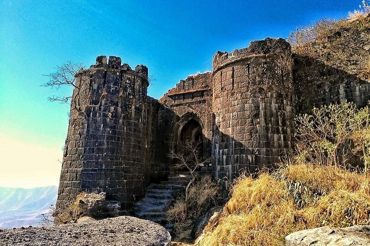

Deogiri Fort
Deogiri Fort, also known as Daulatabad Fort, near Aurangabad in Maharashtra, India, is renowned for its historical significance and architectural brilliance. Serving as the capital of the Tughlaq dynasty in the 14th century, it boasts impressive defense systems and rock-cut tunnels. The fort's strategic hilltop location offers stunning views of the surrounding landscape, making it a captivating destination for history buffs and travelers seeking to explore India's medieval
heritage.


Singagad Fort
Located near Pune in Maharashtra, India, Sinhagad Fort is renowned for its historical significance
and scenic beauty. Perched atop a hill, it offers panoramic views of the surrounding landscape. The
fort holds immense historical importance as it witnessed several battles, including the famous
Battle of Sinhagad in 1670. Visitors are drawn to its rugged terrain, ancient structures, and the
rich history associated with Maratha warriors like Chhatrapati Shivaji Maharaj.

Shivneri Fort
Situated near Junnar in Maharashtra, Shivneri Fort is famous as the
birthplace of Chhatrapati Shivaji Maharaj, the founder of the Maratha Empire. The fort is nestled
amidst lush green hills and offers visitors a glimpse into the life and times of Shivaji Maharaj.
Its architectural marvels, including the imposing entrance gates and water cisterns, reflect the
military and strategic prowess of the Marathas.

Panhala Gad
Situated near Kolhapur in Maharashtra, Panhala Fort is one of the largest
and most impressive forts in the region. It offers stunning views of the Sahyadri mountain range and
the surrounding countryside. The fort has a rich history dating back to the 12th century and has
witnessed several significant events, including battles between the Marathas, Mughals, and the
British. Visitors can explore its massive ramparts, majestic gateways, and historical monuments
within the fort complex.

Vishal Gad
Located in Kolhapur district of Maharashtra, Vishalgad Fort is known for
its strategic importance and historical significance. It offers breathtaking views of the Konkan
region and the nearby Ajra and Amba hills. The fort has a rich history dating back to the Maratha
era and has witnessed numerous battles and events. Visitors can explore its ancient structures,
including temples, water cisterns, and bastions, while soaking in the scenic beauty of the Western
Ghats.

Lal Mahal
Secluded from tourist crowds, Borlipanchatan Beach charms visitors with
its pristine coastline and tranquil atmosphere. Revel in peaceful picnics, shell collecting, or
simply laze under the sun, surrounded by breathtaking vistas. Borlipanchatan offers an
off-the-beaten-path adventure for nature lovers seeking solace by the sea.